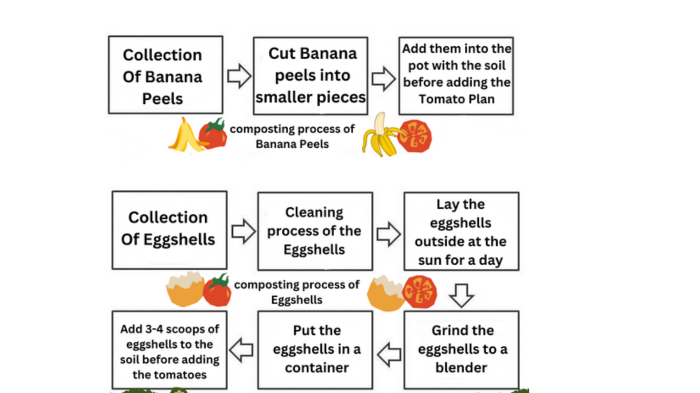
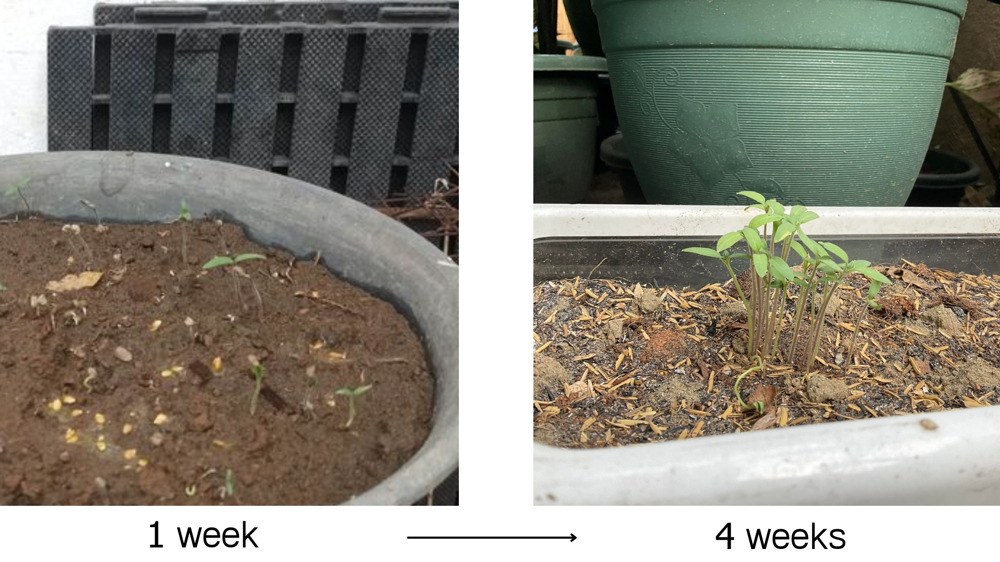
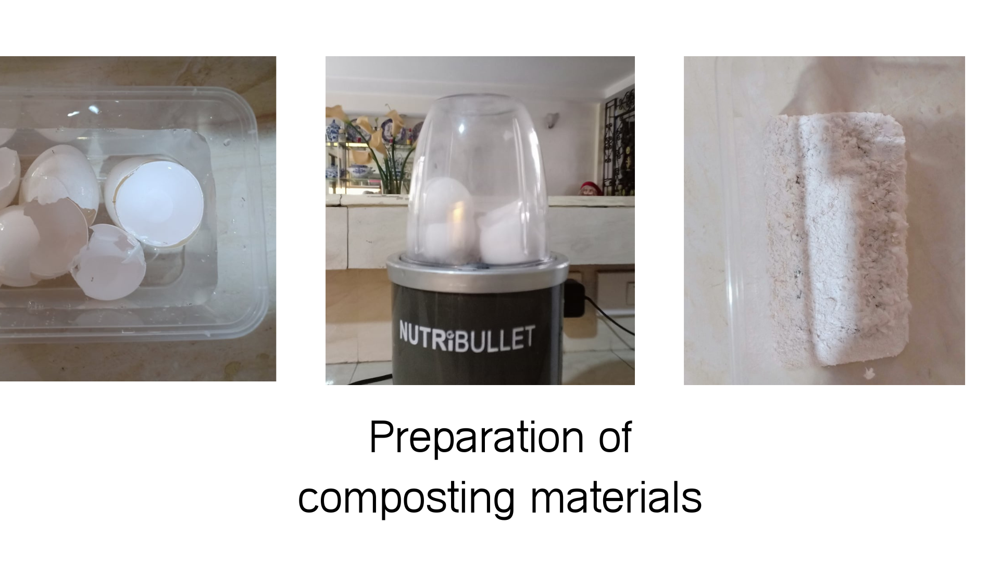

SIP: PROCESS
[Banana Peels Set Up]
-Gather/Collect 3-5 Banana Peels
-Cut the banana peels into smaller pieces
-Put aside the peels for atleast 1 hour
-Add the Banana Peels inside a container
[For Pots]
Gather 5 Pots around 15 inches
Name the pots the ABCs, use a scotch tape and marker in naming them for the experiment to be organized
Label the controlled set up as Pot A
Label the experimental set up for the Banana Peels Pots B1, B2, B3
Label the experimental set up for the Eggshells Pots C1, C2, C3
Visual Preparation:

SIP: DOCUMENTATION
1-4 week old tomato seedlings:

Egg compost preparation:

Scroll to top
ABOUT THE DESIGNER'S
Sean:
Earl Sean Orobia is a loving child at home and a responsible student in school by doing our task in every subject. He suggested and organized our project proposal to make it reliable and possible. He is doing his piano lesson at home with the help of his piano teacher. He help his Mom at home by cooking and doing his house chores.
He pray the rosary every night to offer a prayer for his Dad who just passed away and to thanks God for all the blessings that he received in his daily life.
Annika:
Annika Louise B. Bowden is a creative person. She likes
things such as art. She is mostly more quiet and calm.
And she also tries her best in doing works. She likes to
draw and colour and hopes that she improves more. Annika
is interested animation and music.